|
角色資料
50級任務流程
來源：Lineage
Compendium
注意：大家請細心留意NPC的對話內容，部分NPC提及的重要內容在以下流程中可能忽略了。
1. 要開始50級的任務，必須要有各職業一名50級或以上角色，包括王族、騎士、妖精與法師。
2. 到象牙塔3/F與NPC Dicarding對話，他會提示你到傲慢塔2/F開始任務。
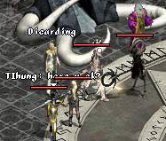
3.
所有任務的隊伍成員要站在王族三格之內，然後王族要與傲慢塔2/F入口的NPC
Ramuda對話，他會將隊伍傳送往任務地點的首層。
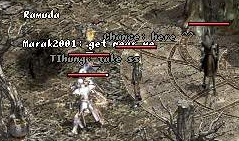
4.
任務成員會隨機分佈在此地方中，大家需要沿路到達地圖中央與其他成員會合，在這層中的怪物有古代人的靈魂、各種骷髏及死神。你應該要在這層中打怪去取得足夠的古代人之箭，這是用來配合妖精45級任務中的古代人之弓使用。只有死神會掉古代人之箭，首層的怪物不會看穿使用隱斗的玩家。
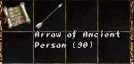
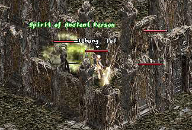
5.
在任務地點第二層中會有四條路通住隨機位置的NPC，任務隊伍必須找尋這名NPC以到達下一層，曾經完成任務的玩家建議大家如果不能找到這名NPC，大家應該在1至4.5小時後重新開始這個任務，以便這名NPC重生。每次只有一名隊伍成員可以使用這名NPC傳送，而其他成員需要再找尋這名NPC的位置。建議使用這名NPC的次序為：法師，王族或騎士，最後是妖精（妖精必須有生命的祝福），這是此任務最麻煩的部分。在此層中會有一隊隊的憤怒的古代人，他們的外型與四色長老一樣，騎士可以殺死紅色的，而藍色的需要用水系魔法來殺死，白死的要用地系魔法。要留意的是大家不一定要將他們殺死，除非他們阻擋去路。
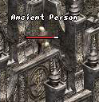
6.
在第三層中有幼龍、梅杜莎、夢魘及魔狼，你必須用能量感測去辨別那些怪物害怕的屬性，完成任務的隊伍發覺騎士要打幼龍，妖精要打怕水的魔狼，法師要打梅杜莎及王族要打夢魘。那些怪物會掉鑰匙，各職業都要有一條。因此你需要打怪直至全隊伍成員都有鑰匙。有一點要注意的，在組隊的狀態下那些怪物是不會給你鑰匙的，因此正確的打怪方法為：辨別牠們害怕的屬性，根據屬性適合的職業成員離開隊伍，殺死那怪物，最後回到隊伍中。那些怪物未必一定會掉鑰匙，因此大家要有耐性。
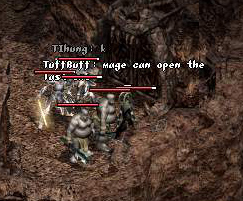
在收集好四條鑰匙後，到此地方的東面去開門，王族開第一扇門，接著是騎士，妖精，最後是法師，然後便有通道往第四層。
7.
在第四層中你會看到外型像紅色安普長老的炎魔跟蹤者，大家可以先準備好加武魔法，然後對他使用相消術，他便會變為惡魔，他的攻擊大約每下50HP，較象牙塔第八層真正的惡魔弱。在擊倒他後會得到命運鑰匙。
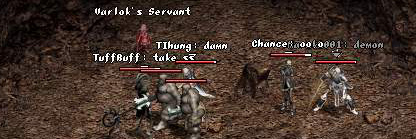
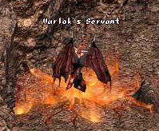
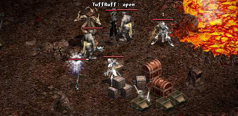
8.
用命運鑰匙開第一扇鬥後會有兩條道路，往南行的話會找到六個寶箱（筆者找到它們時已經被開了）。而往北行則會看到炎魔正在他的房子等待著你，請準備好加武魔法及魔法屏障卷軸，炎魔的攻擊會損100-200HP，而牠的遠距離魔法攻擊更會損300-400HP，因此魔法屏障卷軸是很重要的。在擊倒炎魔後會得到牠的眼睛、爪、劍及心臟，那些道具是可以轉移的，將它們帶回給Dicarding便可以得到任務獎勵。你亦可以不將道具交給Dicarding而去幫助其他朋友去完成任務，官方已經證實了只要你不接受任務獎勵便可以無限量地去解任務。
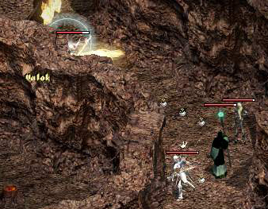
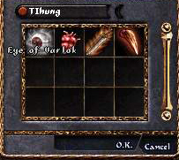
＊提示＊：大家必須帶備濃白及白水，同時亦要有一定的魔法寶石，在打炎魔時一定要有魔法屏障，最好亦要有火靈戒指及隱斗輔助。
＊注意＊：在任務地點上會漸漸失去HP，但MP回復量會增加，即使在超重後仍然會回MP。
50級任務地圖（由Jaja
no ouchi製作）：第一層
| 第二層
| 第三層
| 第四層 |

{kind=link}
{kind=link}
{kind=link}
{kind=link}